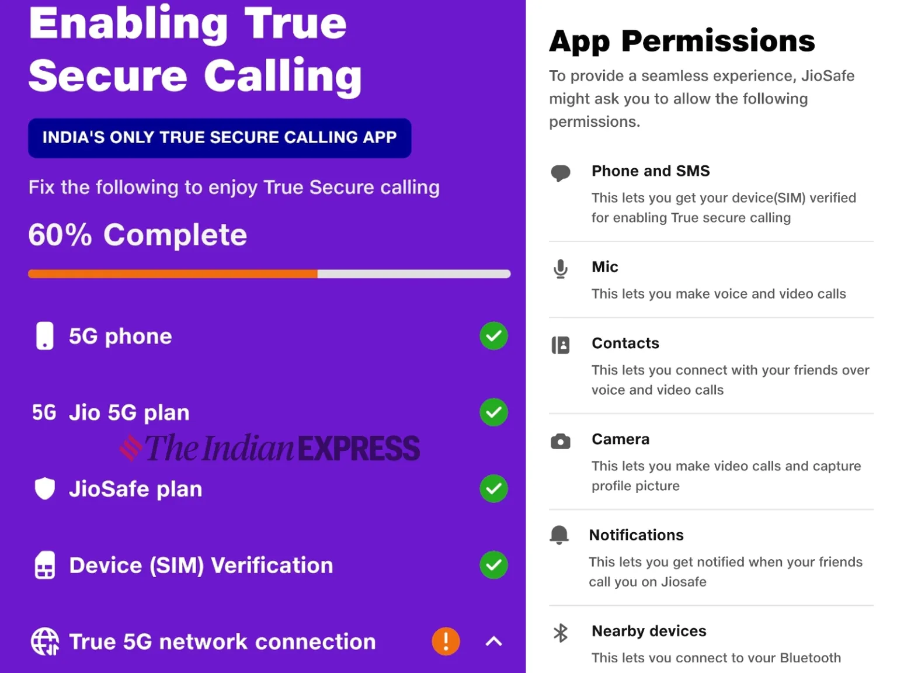
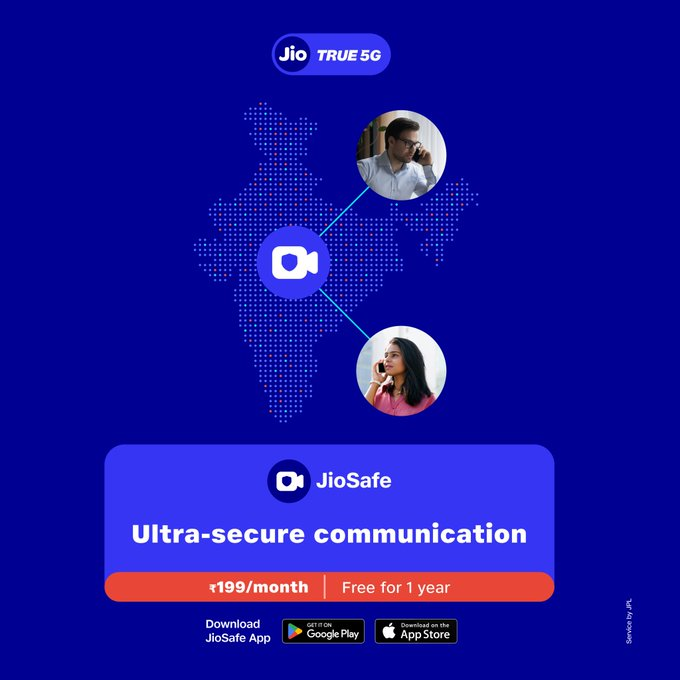

What is JioSafe, how is this 5G-only app different from WhatsApp and Signal?
JioSafe is one of the first messaging or calling apps in the country that only works on a 5G network.
Updated: July 18, 2024 08:08 IST

In order to add more value to its users, Jio has been building a suite of services around its 4G and 5G networks. Recently, Jio introduced JioSafe, which it claims to be an ultra-secure communication app. In simple words, it is a secure video-calling application.
Although JioSafe comes with a monthly subscription charge of Rs 199 for Android and iOS, the telecom giant announced an introductory offer, making it free for a year. With JioSafe, the company is trying to carve a space for itself among the secure video-calling platforms. Here is everything you need to know about JioSafe.
A calling app with five levels of protection
The company claims that JioSafe is a calling app with five levels of protection and is said to be “hack-proof.” It can be used to text, make audio, or video calls to other JioSafe users. However, unlike any other instant messaging or calling apps, there are some prerequisites specific to using JioSafe; otherwise, the app simply won’t work.
Firstly, the JioSafe app only works on a 5G smartphone with a Jio SIM card that is connected to a 5G network. If either one of these parameters from the equation is missing, the app will not boot. This means Jio users who are still on a 4G network won’t be able to sign up for JioSafe.
This also means JioSafe will be limited to India, and anyone outside the country won’t be able to access this service.